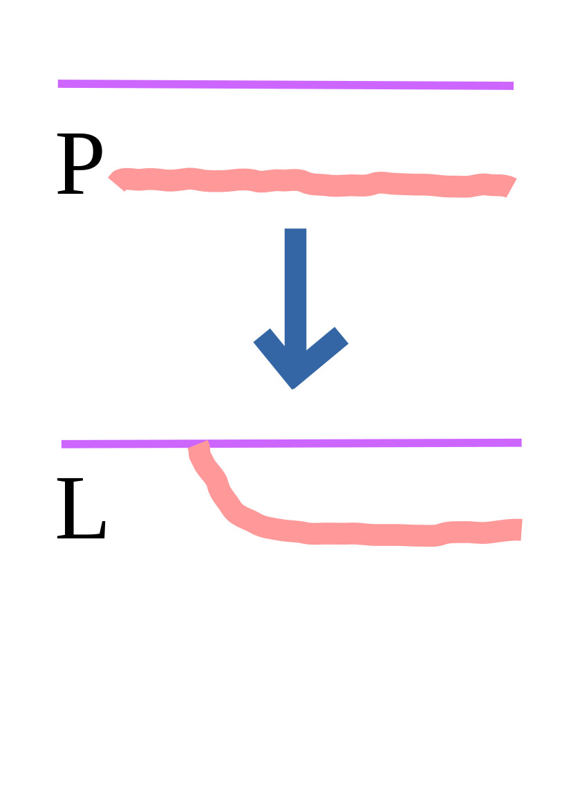

<div class="content">		
	<div class=centeralign>
		<h1>How to Pronounce PL</h1>
		<p>Pl is pronounced pl as people, not pole as in flagpole.
        To do this, pronounce P in the usual way and quickly move the tip of your tongue onto the top of
        of your mouth as you pronounce L.  Do not touch your teeth with your tongue.  
        The purple line in the diagram below is the top of the mouth.</p>
        <p></p>
    </div><!--centeralign-->    
</div><!--content-->
    